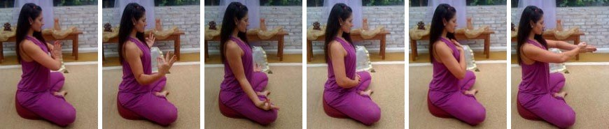

Arte e dança
O yoga também vira gesto e criação.
Tudo o que eu faço nasce do yoga: cuidar do corpo, do gesto e de quem faz junto.

Gesto e dança meditativa
Christiane escreveu sobre meditação com gestos e dança meditativa. Essa pesquisa corporal segue viva no trabalho de hoje.
[espaço para projetos, apresentações e agenda de arte e dança]
Dance Oceano por Christiane Ceron
Moda autoral artesanal, em Florianópolis.
Peças únicas feitas por artesãs da Lagoa da Conceição, nascidas da economia solidária. Yoga aplicado a causas sociais: cuidar de quem faz junto.
Instagram da loja: @danceoceano